昨天我们完成了品牌的查询，接下来就是新增功能。
当我们点击新增按钮，应该出现一个弹窗，然后在弹窗中出现一个表格，我们就可以填写品牌信息了。
我们查看Vuetify官网，弹窗是如何实现：
另外，我们可以通过文档看到对话框的一些属性：
现在，我们来使用一下。
首先，我们在data中定义一个show属性，来控制对话框的显示状态：

然后，在页面添加一个v-dialog
<!--弹出的对话框-->
<v-dialog max-width="500" v-model="show" persistent>
<v-card>
<!--对话框的标题-->
<v-toolbar dense dark color="primary">
<v-toolbar-title>新增品牌</v-toolbar-title>
</v-toolbar>
<!--对话框的内容，表单-->
<v-card-text class="px-5">
我是表单
</v-card-text>
</v-card>
</v-dialog>说明：
我们给dialog指定了3个属性，分别是
因为可滚动需要配合v-card使用，因此我们在对话框中加入了一个v-card
v-card的头部添加了一个 v-toolbar，作为窗口的头部，并且写了标题为：新增品牌v-card的内容部分，暂时空置，等会写表单class=“px-5"：vuetify的内置样式，含义是padding的x轴设置为5，这样表单内容会缩进一些，而不是顶着边框
基本语法：{property}{direction}-{size}
padding和marginp：对应paddingm：对应margint - 对应margin-top或者padding-top属性b - 对应margin-bottom or padding-bottoml - 对应margin-left or padding-leftr - 对应margin-right or padding-rightx - 同时对应*-left和*-right属性y - 同时对应*-top和*-bottom属性$spacer进行倍增，$spacer默认是16px0：将margin或padding的大小设置为01 - 将margin或者padding属性设置为$spacer * .252 - 将margin或者padding属性设置为$spacer * .53 - 将margin或者padding属性设置为$spacer4 - 将margin或者padding属性设置为$spacer * 1.55 - 将margin或者padding属性设置为$spacer * 3窗口可见
接下来，我们要在点击新增品牌按钮时，将窗口显示，因此要给新增按钮绑定事件。
<v-btn color="primary" @click="addBrand">新增品牌</v-btn>然后定义一个addBrand方法：
addBrand(){
// 控制弹窗可见：
this.show = true;
}效果：
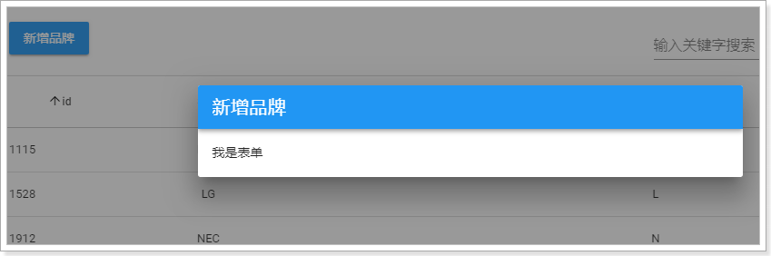
窗口关闭
现在，悲剧发生了，因为我们设置了persistent属性，窗口无法被关闭了。除非把show属性设置为false
因此我们需要给窗口添加一个关闭按钮：
<!--对话框的标题-->
<v-toolbar dense dark color="primary">
<v-toolbar-title>新增品牌</v-toolbar-title>
<v-spacer/>
<!--关闭窗口的按钮-->
<v-btn icon @click="closeWindow"><v-icon>close</v-icon></v-btn>
</v-toolbar>并且，我们还给按钮绑定了点击事件，回调函数为closeWindow。
接下来，编写closeWindow函数：
closeWindow(){
// 关闭窗口
this.show = false;
}效果：
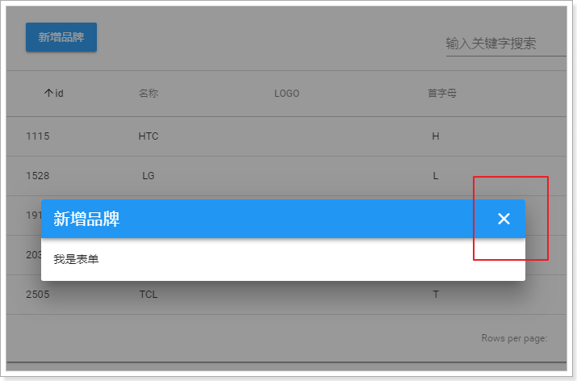
接下来就是写表单了。我们有两种选择：
选第几种？
我们选第二种方案，优点：
我们新建一个MyBrandForm.vue组件：

将MyBrandForm引入到MyBrand中，这里使用局部组件的语法：
先导入自定义组件：
// 导入自定义的表单组件
import MyBrandForm from './MyBrandForm'然后通过components属性来指定局部组件：
components:{
MyBrandForm
}然后在页面中引用：
页面效果：

查看文档，找到关于表单的部分：

v-form，表单组件，内部可以有许多输入项。v-form有下面的属性：
v-form提供了两个方法：
我们在data中定义一个valid属性，跟表单的value进行双向绑定，观察表单是否通过校验，同时把等会要跟表单关联的品牌brand对象声明出来：
export default {
name: "my-brand-form",
data() {
return {
valid:false, // 表单校验结果标记
brand:{
name:'', // 品牌名称
letter:'', // 品牌首字母
image:'',// 品牌logo
categories:[], // 品牌所属的商品分类数组
}
}
}
}然后，在页面先写一个表单：
<v-form v-model="valid">
</v-form>我们的品牌总共需要这些字段：
表单项主要包括文本框、密码框、多选框、单选框、文本域、下拉选框、文件上传等。思考下我们的品牌需要哪些？
先看文本框，昨天已经用过的，叫做v-text-field：

查看文档，v-text-field有以下关键属性：
multi-line为true时才有效接下来，我们先添加两个字段：品牌名称、品牌的首字母，校验规则暂时不写：
<v-form v-model="valid">
<v-text-field v-model="brand.name" label="请输入品牌名称" required />
<v-text-field v-model="brand.letter" label="请输入品牌首字母" required />
</v-form>v-model把表单项与brand的属性关联起来。效果：

接下来就是商品分类了，按照刚才的分析，商品分类应该是下拉选框。
但是大家仔细思考，商品分类包含三级。在展示的时候，应该是先由用户选中1级，才显示2级；选择了2级，才显示3级。形成一个多级分类的三级联动效果。
这个时候，就不是普通的下拉选框，而是三级联动的下拉选框！
这样的选框，在Vuetify中并没有提供（它提供的是基本的下拉框）。因此我已经给大家编写了一个无限级联动的下拉选框，能够满足我们的需求。
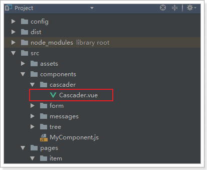
具体请参考课前资料的《自定义组件用法指南.md》
我们在代码中使用：
<v-cascader
url="/item/category/list"
multiple
required
v-model="brand.categories"
label="请选择商品分类"/>效果：

data中获取的结果：
在Vuetify中，也没有文件上传的组件。

还好，我已经给大家写好了一个文件上传的组件：

详细用法，参考《自定义组件使用指南.md》
我们添加上传的组件：
<v-layout row>
<v-flex xs3>
<span style="font-size: 16px; color: #444">品牌LOGO：</span>
</v-flex>
<v-flex>
<v-upload
v-model="brand.image"
url="/upload"
:multiple="false"
:pic-width="250"
:pic-height="90"
/>
</v-flex>
</v-layout>注意：
v-layout布局组件：v-flex组件，是这一行的单元，我们有2个单元<v-flex xs3> ：显示文字说明，xs3是响应式布局，代表占12格中的3格v-upload：图片上传组件，包含以下属性：最终结果：
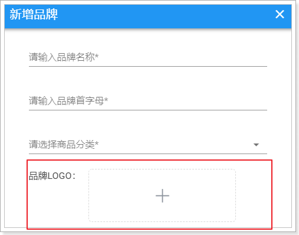
上面已经把所有的表单项写完。最后就差提交和清空的按钮了。
在表单的最下面添加两个按钮：
<v-layout class="my-4" row>
<v-spacer/>
<v-btn @click="submit" color="primary">提交</v-btn>
<v-btn @click="clear" >重置</v-btn>
</v-layout>my-4增大上下边距v-spacer占用一定空间，将按钮都排挤到页面右侧我们先将方法定义出来：
methods:{
submit(){
// 提交表单
},
clear(){
// 重置表单
}
}重置表单相对简单，因为v-form组件已经提供了reset方法，用来清空表单数据。只要我们拿到表单组件对象，就可以调用方法了。
我们可以通过$refs内置对象来获取表单组件。
首先，在表单上定义ref属性：

然后，在页面查看this.$refs属性：

看到this.$refs中只有一个属性，就是myBrandForm
我们在clear中来获取表单对象并调用reset方法：
methods:{
submit(){
// 提交表单
console.log(this);
},
clear(){
// 重置表单
this.$refs.myBrandForm.reset();
// 需要手动清空商品分类
this.categories = [];
}
}要注意的是，这里我们还手动把this.categories清空了，因为我写的级联选择组件并没有跟表单结合起来。需要手动清空。
Vuetify的表单校验，是通过rules属性来指定的：
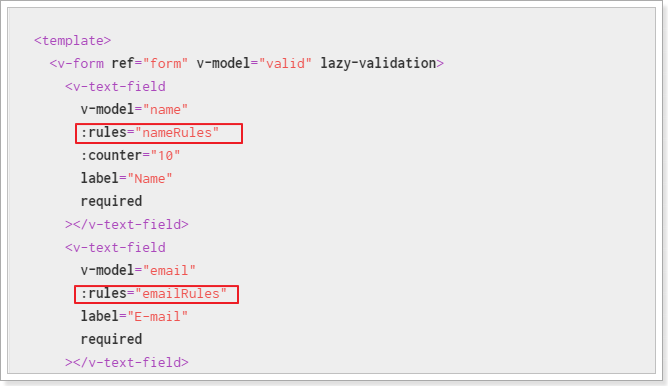
校验规则的写法：

说明：
我们有四个字段：
首先，我们定义规则：
nameRules:[
v => !!v || "品牌名称不能为空",
v => v.length > 1 || "品牌名称至少2位"
],
letterRules:[
v => !!v || "首字母不能为空",
v => /^[A-Z]{1}$/.test(v) || "品牌字母只能是A~Z的大写字母"
]然后，在页面标签中指定：
<v-text-field v-model="brand.name" label="请输入品牌名称" required :rules="nameRules" />
<v-text-field v-model="brand.letter" label="请输入品牌首字母" required :rules="letterRules" />效果：

在submit方法中添加表单提交的逻辑：
submit() {
// 1、表单校验
if (this.$refs.myBrandForm.validate()) {
// 2、定义一个请求参数对象，通过解构表达式来获取brand中的属性
const {categories ,letter ,...params} = this.brand;
// 3、数据库中只要保存分类的id即可，因此我们对categories的值进行处理,只保留id，并转为字符串
params.cids = categories.map(c => c.id).join(",");
// 4、将字母都处理为大写
params.letter = letter.toUpperCase();
// 5、将数据提交到后台
this.$http.post('/item/brand', params)
.then(() => {
// 6、弹出提示
this.$message.success("保存成功！");
})
.catch(() => {
this.$message.error("保存失败！");
});
}
}1、通过this.$refs.myBrandForm选中表单，然后调用表单的validate方法，进行表单校验。返回boolean值，true代表校验通过
2、通过解构表达式来获取brand中的值，categories和letter需要处理，单独获取。其它的存入params对象中
3、品牌和商品分类的中间表只保存两者的id，而brand.categories中保存的数对象数组，里面有id和name属性，因此这里通过数组的map功能转为id数组，然后通过join方法拼接为字符串
4、首字母都处理为大写保存
5、发起请求
6、弹窗提示成功还是失败，这里用到的是我们的自定义组件功能message组件：

这个插件把$message对象绑定到了Vue的原型上，因此我们可以通过this.$message来直接调用。
包含以下常用方法：
this.$message.confirm("确认框的提示信息")，返回一个Promise还是一样，先分析四个内容：
代码：
/**
* 新增品牌
* @param brand
* @return
*/
@PostMapping
public ResponseEntity<Void> saveBrand(Brand brand, @RequestParam("cids") List<Long> cids) {
this.brandService.saveBrand(brand, cids);
return new ResponseEntity<>(HttpStatus.CREATED);
}这里要注意，我们不仅要新增品牌，还要维护品牌和商品分类的中间表。
@Transactional
public void saveBrand(Brand brand, List<Long> cids) {
// 新增品牌信息
this.brandMapper.insertSelective(brand);
// 新增品牌和分类中间表
for (Long cid : cids) {
this.brandMapper.insertCategoryBrand(cid, brand.getId());
}
}这里调用了brandMapper中的一个自定义方法，来实现中间表的数据新增
通用Mapper只能处理单表，也就是Brand的数据，因此我们手动编写一个方法及sql，实现中间表的新增：
public interface BrandMapper extends Mapper<Brand> {
/**
* 新增商品分类和品牌中间表数据
* @param cid 商品分类id
* @param bid 品牌id
* @return
*/
@Insert("INSERT INTO tb_category_brand (category_id, brand_id) VALUES (#{cid},#{bid})")
int insertCategoryBrand(@Param("cid") Long cid, @Param("bid") Long bid);
}我们填写表单并提交，发现报错了：
查看控制台的请求详情：

发现请求的数据格式是JSON格式。
原因分析：
axios处理请求体的原则会根据请求数据的格式来定：
如果请求体是对象：会转为json发送
如果请求体是String：会作为普通表单请求发送，但需要我们自己保证String的格式是键值对。
如：name=jack&age=12
QS是一个第三方库，我们可以用npm install qs --save来安装。不过我们在项目中已经集成了，大家无需安装：

这个工具的名字：QS，即Query String，请求参数字符串。
什么是请求参数字符串？例如： name=jack&age=21
QS工具可以便捷的实现 JS的Object与QueryString的转换。
在我们的项目中，将QS注入到了Vue的原型对象中，我们可以通过this.$qs来获取这个工具：
我们将this.$qs对象打印到控制台：
created(){
console.log(this.$qs);
}发现其中有3个方法：

这里我们要使用的方法是stringify，它可以把Object转为QueryString。
测试一下，使用浏览器工具，把qs对象保存为一个临时变量：
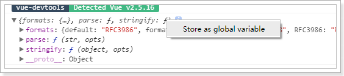
然后调用stringify方法：

成功将person对象变成了 name=jack&age=21的字符串了
修改页面，对参数处理后发送：
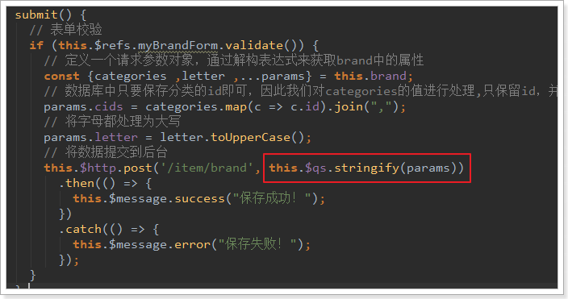
然后再次发起请求：

发现请求成功：

参数格式：

数据库：

我们发现有一个问题：新增不管成功还是失败，窗口都一致在这里，不会关闭。
这样很不友好，我们希望如果新增失败，窗口保持；但是新增成功，窗口关闭才对。
因此，我们需要在新增的ajax请求完成以后，关闭窗口
但问题在于，控制窗口是否显示的标记在父组件：MyBrand.vue中。子组件如何才能操作父组件的属性？或者告诉父组件该关闭窗口了？
之前我们讲过一个父子组件的通信，有印象吗？
closeWindow(){
// 关闭窗口
this.show = false;
// 重新加载数据
this.getDataFromServer();
}<!--对话框的内容，表单-->
<v-card-text class="px-5">
<my-brand-form @close="closeWindow"/>
</v-card-text>第三步，子组件通过this.$emit调用父组件的函数：

测试一下
刚才的新增实现中，我们并没有上传图片，接下来我们一起完成图片上传逻辑。
文件的上传并不只是在品牌管理中有需求，以后的其它服务也可能需要，因此我们创建一个独立的微服务，专门处理各种上传。
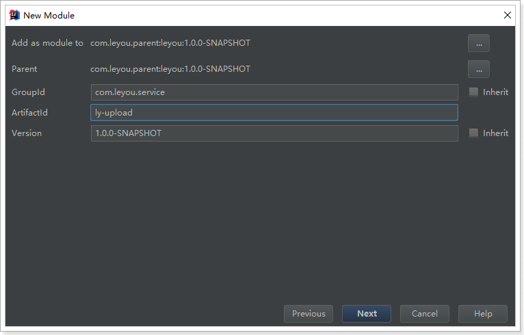
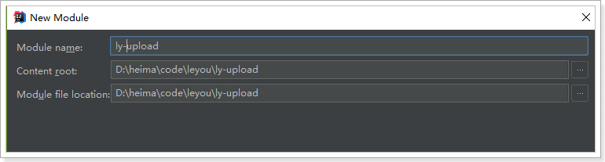
我们需要EurekaClient和web依赖：
<?xml version="1.0" encoding="UTF-8"?>
<project xmlns="http://maven.apache.org/POM/4.0.0"
xmlns:xsi="http://www.w3.org/2001/XMLSchema-instance"
xsi:schemaLocation="http://maven.apache.org/POM/4.0.0 http://maven.apache.org/xsd/maven-4.0.0.xsd">
<parent>
<artifactId>leyou</artifactId>
<groupId>com.leyou.parent</groupId>
<version>1.0.0-SNAPSHOT</version>
</parent>
<modelVersion>4.0.0</modelVersion>
<groupId>com.leyou.service</groupId>
<artifactId>ly-upload</artifactId>
<version>1.0.0-SNAPSHOT</version>
<dependencies>
<dependency>
<groupId>org.springframework.cloud</groupId>
<artifactId>spring-cloud-starter-netflix-eureka-client</artifactId>
</dependency>
<dependency>
<groupId>org.springframework.boot</groupId>
<artifactId>spring-boot-starter-web</artifactId>
</dependency>
</dependencies>
</project>server:
port: 8082
spring:
application:
name: upload-service
servlet:
multipart:
max-file-size: 5MB # 限制文件上传的大小
# Eureka
eureka:
client:
service-url:
defaultZone: http://127.0.0.1:10086/eureka
instance:
lease-renewal-interval-in-seconds: 5 # 每隔5秒发送一次心跳
lease-expiration-duration-in-seconds: 10 # 10秒不发送就过期
prefer-ip-address: true
ip-address: 127.0.0.1
instance-id: ${spring.application.name}:${server.port}需要注意的是，我们应该添加了限制文件大小的配置
@SpringBootApplication
@EnableDiscoveryClient
public class LyUploadService {
public static void main(String[] args) {
SpringApplication.run(LyUploadService.class, args);
}
}结构：

编写controller需要知道4个内容：
代码如下：
@RestController
@RequestMapping("upload")
public class UploadController {
@Autowired
private UploadService uploadService;
/**
* 上传图片功能
* @param file
* @return
*/
@PostMapping("image")
public ResponseEntity<String> uploadImage(@RequestParam("file") MultipartFile file) {
String url = this.uploadService.upload(file);
if (StringUtils.isBlank(url)) {
// url为空，证明上传失败
return new ResponseEntity<>(HttpStatus.BAD_REQUEST);
}
// 返回200，并且携带url路径
return ResponseEntity.ok(url);
}
}在上传文件过程中，我们需要对上传的内容进行校验：
文件大小在Spring的配置文件中设置，因此已经会被校验，我们不用管。
具体代码：
@Service
public class UploadService {
private static final Logger logger = LoggerFactory.getLogger(UploadController.class);
// 支持的文件类型
private static final List<String> suffixes = Arrays.asList("image/png", "image/jpeg");
public String upload(MultipartFile file) {
try {
// 1、图片信息校验
// 1)校验文件类型
String type = file.getContentType();
if (!suffixes.contains(type)) {
logger.info("上传失败，文件类型不匹配：{}", type);
return null;
}
// 2)校验图片内容
BufferedImage image = ImageIO.read(file.getInputStream());
if (image == null) {
logger.info("上传失败，文件内容不符合要求");
return null;
}
// 2、保存图片
// 2.1、生成保存目录
File dir = new File("D:\\heima\\upload");
if (!dir.exists()) {
dir.mkdirs();
}
// 2.2、保存图片
file.transferTo(new File(dir, file.getOriginalFilename()));
// 2.3、拼接图片地址
String url = "http://image.leyou.com/upload/" + file.getOriginalFilename();
return url;
} catch (Exception e) {
return null;
}
}
}这里有一个问题：为什么图片地址需要使用另外的url？
我们通过RestClient工具来测试：
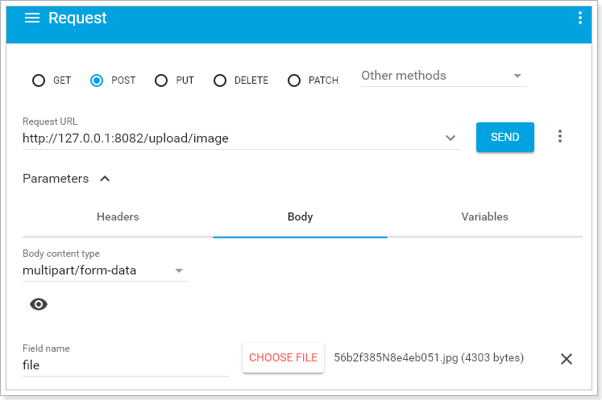
结果：
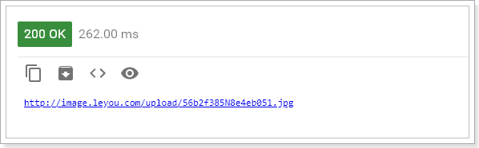
去目录下查看：

上传成功！
图片上传是文件的传输，如果也经过Zuul网关的代理，文件就会经过多次网路传输，造成不必要的网络负担。在高并发时，可能导致网络阻塞，Zuul网关不可用。这样我们的整个系统就瘫痪了。
所以，我们上传文件的请求就不经过网关来处理了。
Zuul中提供了一个ignored-patterns属性，用来忽略不希望路由的URL路径，示例：
zuul.ignored-patterns: /upload/**路径过滤会对一切微服务进行判定。
Zuul还提供了ignored-services属性，进行服务过滤：
zuul.ignored-services: upload-servie我们这里采用忽略服务：
zuul:
ignored-services:
- upload-service # 忽略upload-service服务上面的配置采用了集合语法，代表可以配置多个
现在，我们修改页面的访问路径：
<v-upload
v-model="brand.image"
url="/upload/image"
:multiple="false"
:pic-width="250" :pic-height="90"
/>查看页面的请求路径：
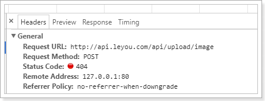
可以看到这个地址不对，依然是去找Zuul网关，因为我们的系统全局配置了URL地址。怎么办？
有同学会想：修改页面请求地址不就好了。
注意：原则上，我们是不能把除了网关以外的服务对外暴露的，不安全。
既然不能修改页面请求，那么就只能在Nginx反向代理上做文章了。
我们修改nginx配置，将以/api/upload开头的请求拦截下来，转交到真实的服务地址:
location /api/upload {
proxy_pass http://127.0.0.1:8082;
proxy_connect_timeout 600;
proxy_read_timeout 600;
}这样写大家觉得对不对呢？
显然是不对的，因为ip和端口虽然对了，但是路径没变，依然是：http://127.0.0.1:8002/api/upload/image
前面多了一个/api
Nginx提供了rewrite指令，用于对地址进行重写，语法规则：
rewrite "用来匹配路径的正则" 重写后的路径 [指令];我们的案例：
server {
listen 80;
server_name api.leyou.com;
proxy_set_header X-Forwarded-Host $host;
proxy_set_header X-Forwarded-Server $host;
proxy_set_header X-Forwarded-For $proxy_add_x_forwarded_for;
# 上传路径的映射
location /api/upload {
proxy_pass http://127.0.0.1:8082;
proxy_connect_timeout 600;
proxy_read_timeout 600;
rewrite "^/api/(.*)$" /$1 break;
}
location / {
proxy_pass http://127.0.0.1:10010;
proxy_connect_timeout 600;
proxy_read_timeout 600;
}
}首先，我们映射路径是/api/upload，而下面一个映射路径是 / ，根据最长路径匹配原则，/api/upload优先级更高。也就是说，凡是以/api/upload开头的路径，都会被第一个配置处理
proxy_pass：反向代理，这次我们代理到8082端口，也就是upload-service服务
rewrite "^/api/(.*)$" /$1 break，路径重写：
"^/api/(.*)$"：匹配路径的正则表达式，用了分组语法，把/api/以后的所有部分当做1组
/$1：重写的目标路径，这里用$1引用前面正则表达式匹配到的分组（组编号从1开始），即/api/后面的所有。这样新的路径就是除去/api/以外的所有，就达到了去除/api前缀的目的
break：指令，常用的有2个，分别是：last、break
我们这里不能选择last，否则以新的路径/upload/image来匹配，就不会被正确的匹配到8082端口了
修改完成，输入nginx -s reload命令重新加载配置。然后再次上传试试。
重启nginx，再次上传，发现报错了：
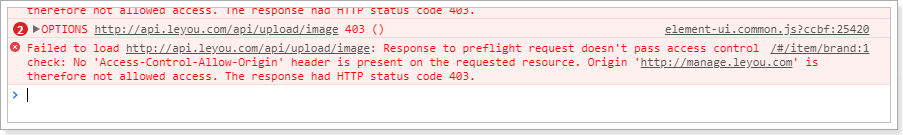
不过庆幸的是，这个错误已经不是第一次见了，跨域问题。
我们在upload-service中添加一个CorsFilter即可：
@Configuration
public class GlobalCorsConfig {
@Bean
public CorsFilter corsFilter() {
//1.添加CORS配置信息
CorsConfiguration config = new CorsConfiguration();
//1) 允许的域,不要写*，否则cookie就无法使用了
config.addAllowedOrigin("http://manage.leyou.com");
//2) 是否发送Cookie信息
config.setAllowCredentials(false);
//3) 允许的请求方式
config.addAllowedMethod("OPTIONS");
config.addAllowedMethod("POST");
config.addAllowedHeader("*");
//2.添加映射路径，我们拦截一切请求
UrlBasedCorsConfigurationSource configSource = new UrlBasedCorsConfigurationSource();
configSource.registerCorsConfiguration("/**", config);
//3.返回新的CorsFilter.
return new CorsFilter(configSource);
}
}再次测试：
不过，非常遗憾的是，访问图片地址，却没有响应。

这是因为我们并没有任何服务器对应image.leyou.com这个域名。。
这个问题，我们暂时放下，回头再来解决。
先思考一下，之前上传的功能，有没有什么问题？
上传本身没有任何问题，问题出在保存文件的方式，我们是保存在服务器机器，就会有下面的问题：
这个时候，最好使用分布式文件存储来代替本地文件存储。
分布式文件系统（Distributed File System）是指文件系统管理的物理存储资源不一定直接连接在本地节点上，而是通过计算机网络与节点相连。
通俗来讲：
FastDFS是由淘宝的余庆先生所开发的一个轻量级、高性能的开源分布式文件系统。用纯C语言开发，功能丰富：
适合有大容量存储需求的应用或系统。同类的分布式文件系统有谷歌的GFS、HDFS（Hadoop）、TFS（淘宝）等。
先上图：

FastDFS两个主要的角色：Tracker Server 和 Storage Server 。
上传
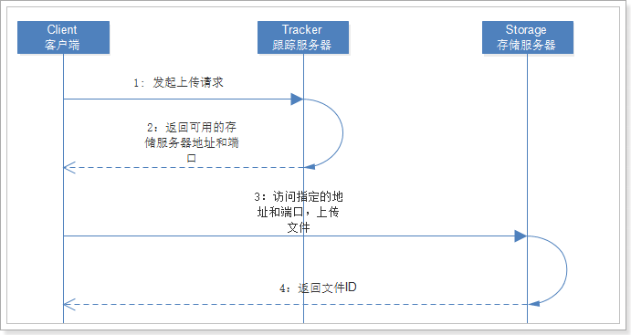
下载
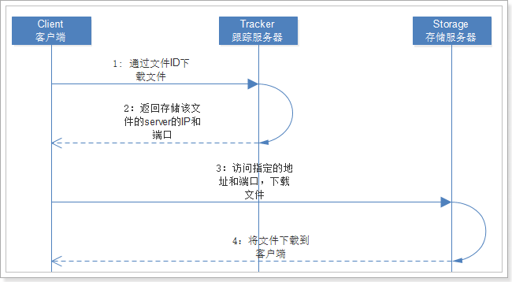
参考课前资料的：《centos安装FastDFS.md》
余庆先生提供了一个Java客户端，但是作为一个C程序员，写的java代码可想而知。而且已经很久不维护了。
这里推荐一个开源的FastDFS客户端，支持最新的SpringBoot2.0。
配置使用极为简单，支持连接池，支持自动生成缩略图，狂拽酷炫吊炸天啊，有木有。

在父工程中，我们已经管理了依赖，版本为：
<fastDFS.client.version>1.26.2</fastDFS.client.version>因此，这里我们直接引入坐标即可：
<dependency>
<groupId>com.github.tobato</groupId>
<artifactId>fastdfs-client</artifactId>
</dependency>纯java配置：
@Configuration
@Import(FdfsClientConfig.class)
// 解决jmx重复注册bean的问题
@EnableMBeanExport(registration = RegistrationPolicy.IGNORE_EXISTING)
public class FastClientImporter {
}fdfs:
so-timeout: 1501
connect-timeout: 601
thumb-image: # 缩略图
width: 60
height: 60
tracker-list: # tracker地址
- 192.168.56.101:22122@RunWith(SpringRunner.class)
@SpringBootTest(classes = LyUploadService.class)
public class FdfsTest {
@Autowired
private FastFileStorageClient storageClient;
@Autowired
private ThumbImageConfig thumbImageConfig;
@Test
public void testUpload() throws FileNotFoundException {
File file = new File("D:\\test\\baby.png");
// 上传并且生成缩略图
StorePath storePath = this.storageClient.uploadFile(
new FileInputStream(file), file.length(), "png", null);
// 带分组的路径
System.out.println(storePath.getFullPath());
// 不带分组的路径
System.out.println(storePath.getPath());
}
@Test
public void testUploadAndCreateThumb() throws FileNotFoundException {
File file = new File("D:\\test\\baby.png");
// 上传并且生成缩略图
StorePath storePath = this.storageClient.uploadImageAndCrtThumbImage(
new FileInputStream(file), file.length(), "png", null);
// 带分组的路径
System.out.println(storePath.getFullPath());
// 不带分组的路径
System.out.println(storePath.getPath());
// 获取缩略图路径
String path = thumbImageConfig.getThumbImagePath(storePath.getPath());
System.out.println(path);
}
}结果：
group1/M00/00/00/wKg4ZVro5eCAZEMVABfYcN8vzII630.png
M00/00/00/wKg4ZVro5eCAZEMVABfYcN8vzII630.png
M00/00/00/wKg4ZVro5eCAZEMVABfYcN8vzII630_60x60.png访问第一个路径：
访问最后一个路径（缩略图路径），注意加组名：

@Service
public class UploadService {
private static final Logger logger = LoggerFactory.getLogger(UploadController.class);
// 支持的文件类型
private static final List<String> suffixes = Arrays.asList("image/png", "image/jpeg");
@Autowired
FastFileStorageClient storageClient;
public String upload(MultipartFile file) {
try {
// 1、图片信息校验
// 1)校验文件类型
String type = file.getContentType();
if (!suffixes.contains(type)) {
logger.info("上传失败，文件类型不匹配：{}", type);
return null;
}
// 2)校验图片内容
BufferedImage image = ImageIO.read(file.getInputStream());
if (image == null) {
logger.info("上传失败，文件内容不符合要求");
return null;
}
// 2、将图片上传到FastDFS
// 2.1、获取文件后缀名
String extension = StringUtils.substringAfterLast(file.getOriginalFilename(), ".");
// 2.2、上传
StorePath storePath = this.storageClient.uploadFile(
file.getInputStream(), file.getSize(), extension, null);
// 2.3、返回完整路径
return "http://image.leyou.com/" + storePath.getFullPath();
} catch (Exception e) {
return null;
}
}
}只需要把原来保存文件的逻辑去掉，然后上传到FastDFS即可。
通过RestClient测试：
发现上传成功：
不过，当我们访问页面时：
这是因为我们图片是上传到虚拟机的，ip为：192.168.56.101
因此，我们需要将image.leyou.com映射到192.168.56.101
修改我们的hosts：
再次上传：
修改的难点在于回显。
当我们点击编辑按钮，希望弹出窗口的同时，看到原来的数据：

这个比较简单，修改show属性为true即可实现，我们绑定一个点击事件：
<v-btn color="info" @click="editBrand">编辑</v-btn>然后编写事件，改变show 的状态：

如果仅仅是这样，编辑按钮与新增按钮将没有任何区别，关键在于，如何回显呢？
回显数据，就是把当前点击的品牌数据传递到子组件（MyBrandForm）。而父组件给子组件传递数据，通过props属性。
第一步：在编辑时获取当前选中的品牌信息，并且记录到data中
先在data中定义属性，用来接收用来编辑的brand数据：

我们在页面触发编辑事件时，把当前的brand传递给editBrand方法：
<v-btn color="info" @click="editBrand(props.item)">编辑</v-btn>然后在editBrand中接收数据，赋值给oldBrand：
editBrand(oldBrand){
// 控制弹窗可见：
this.show = true;
// 获取要编辑的brand
this.oldBrand = oldBrand;
},第二步：把获取的brand数据 传递给子组件
<!--对话框的内容，表单-->
<v-card-text class="px-5">
<my-brand-form @close="closeWindow" :oldBrand="oldBrand"/>
</v-card-text>第三步：在子组件中通过props接收要编辑的brand数据，Vue会自动完成回显
接收数据：

通过watch函数监控oldBrand的变化，把值copy到本地的brand：
watch: {
oldBrand: {// 监控oldBrand的变化
handler(val) {
if(val){
// 注意不要直接复制，否则这边的修改会影响到父组件的数据，copy属性即可
this.brand = Object.deepCopy(val)
}else{
// 为空，初始化brand
this.brand = {
name: '',
letter: '',
image: '',
categories: [],
}
}
},
deep: true
}
}测试：发现数据回显了，除了商品分类以外：

为什么商品分类没有回显？
因为品牌中并没有商品分类数据。我们需要在进入编辑页面之前，查询商品分类信息：
controller
/**
* 通过品牌id查询商品分类
* @param bid
* @return
*/
@GetMapping("bid/{bid}")
public ResponseEntity<List<Category>> queryByBrandId(@PathVariable("bid") Long bid) {
List<Category> list = this.categoryService.queryByBrandId(bid);
if (list == null || list.size() < 1) {
return new ResponseEntity<>(HttpStatus.NOT_FOUND);
}
return ResponseEntity.ok(list);
}Service
public List<Category> queryByBrandId(Long bid) {
return this.categoryMapper.queryByBrandId(bid);
}mapper
因为需要通过中间表进行子查询，所以这里要手写Sql：
/**
* 根据品牌id查询商品分类
* @param bid
* @return
*/
@Select("SELECT * FROM tb_category WHERE id IN (SELECT category_id FROM tb_category_brand WHERE brand_id = #{bid})")
List<Category> queryByBrandId(Long bid);我们在编辑页面打开之前，先把数据查询完毕：
editBrand(oldBrand){
// 根据品牌信息查询商品分类
this.$http.get("/item/category/bid/" + oldBrand.id)
.then(({data}) => {
// 控制弹窗可见：
this.show = true;
// 获取要编辑的brand
this.oldBrand = oldBrand
// 回显商品分类
this.oldBrand.categories = data;
})
}再次测试：数据成功回显了

但是，此时却产生了新问题：新增窗口竟然也有数据？
原因：
如果之前打开过编辑，那么在父组件中记录的oldBrand会保留。下次再打开窗口，如果是编辑窗口到没问题，但是新增的话，就会再次显示上次打开的品牌信息了。
解决：
新增窗口打开前，把数据置空。
addBrand() {
// 控制弹窗可见：
this.show = true;
// 把oldBrand变为null
this.oldBrand = null;
}新增和修改是同一个页面，我们该如何判断？
父组件中点击按钮弹出新增或修改的窗口，因此父组件非常清楚接下来是新增还是修改。
因此，最简单的方案就是，在父组件中定义变量，记录新增或修改状态，当弹出页面时，把这个状态也传递给子组件。
第一步：在父组件中记录状态：

第二步：在新增和修改前，更改状态：

第三步：传递给子组件

第四步，子组件接收标记：

标题的动态化：
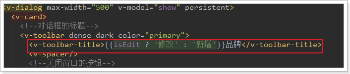
表单提交动态：
axios除了除了get和post外，还有一个通用的请求方式：
// 将数据提交到后台
// this.$http.post('/item/brand', this.$qs.stringify(params))
this.$http({
method: this.isEdit ? 'put' : 'post', // 动态判断是POST还是PUT
url: '/item/brand',
data: this.$qs.stringify(this.brand)
}).then(() => {
// 关闭窗口
this.$emit("close");
this.$message.success("保存成功！");
})
.catch(() => {
this.$message.error("保存失败！");
});Edit By MaHua